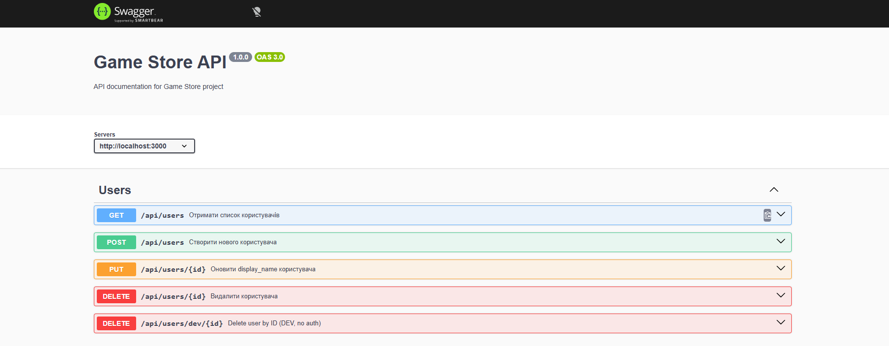
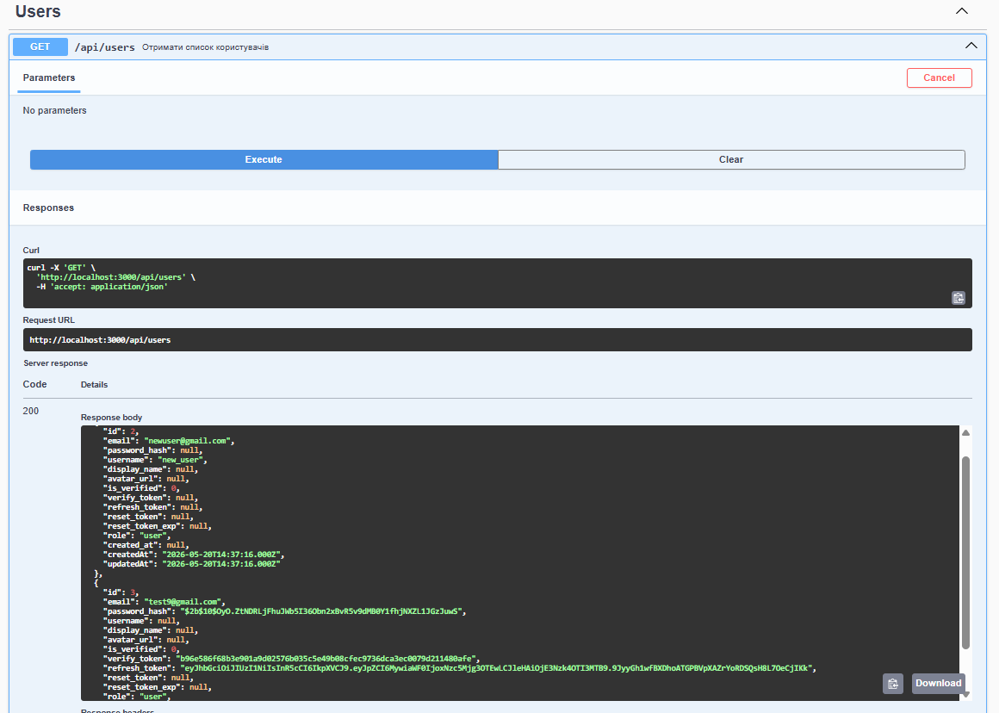
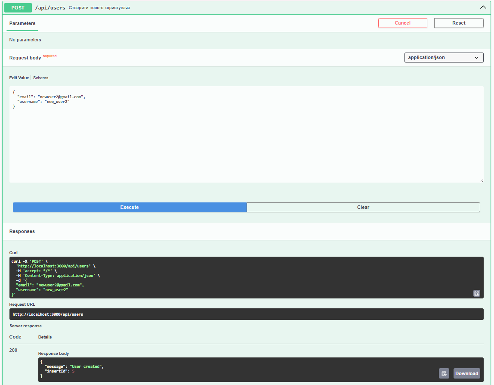
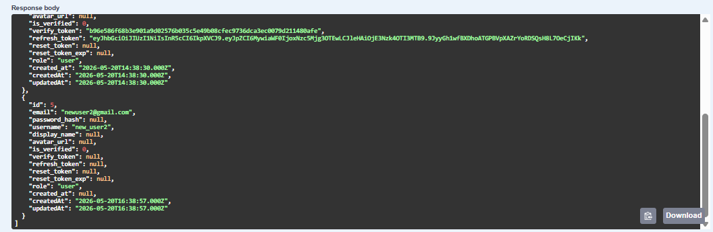
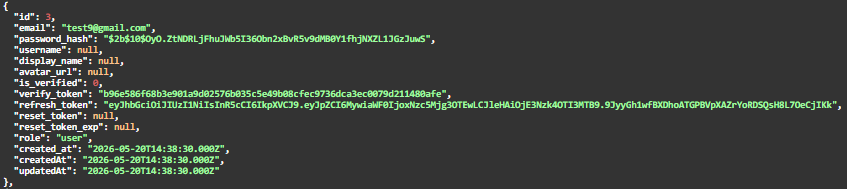
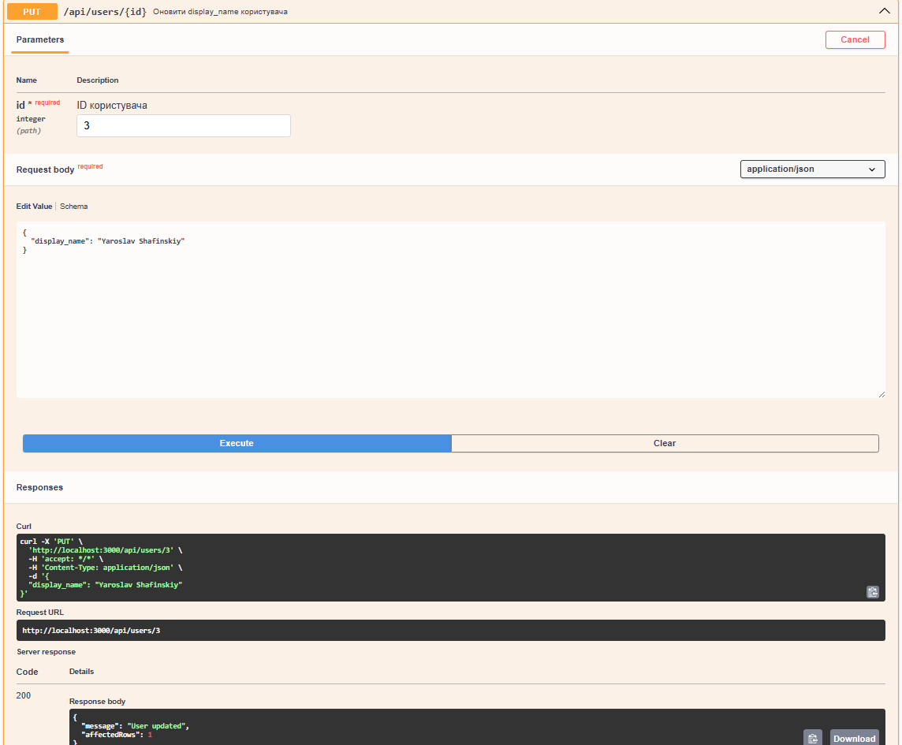
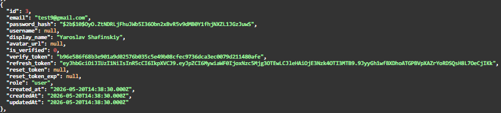
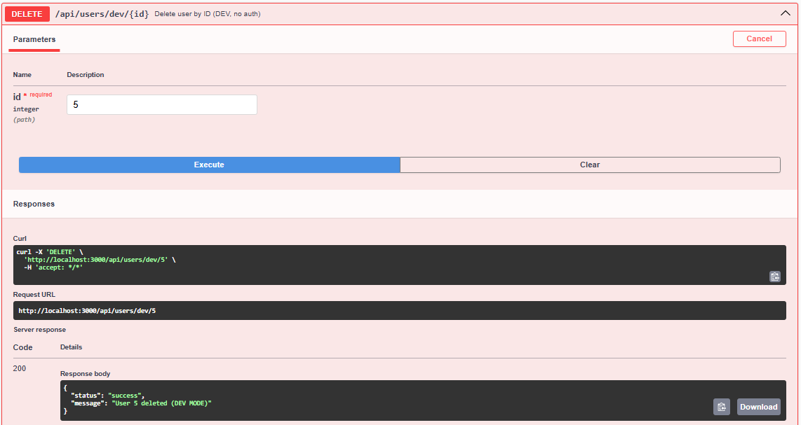

Зображення
Запускаємо сервер і відкриваємо: http://localhost:3000/api/docs де бачимо Swagger UI

Запит GET у Swagger UI

Запит POST у Swagger UI

Створений користувач

Користувач до оновлення

Запит PUT у Swagger UI

Користувач після оновлення

Користувач до видаленняя
Запит DELETE у Swagger UI

Користувача немає після видалення
